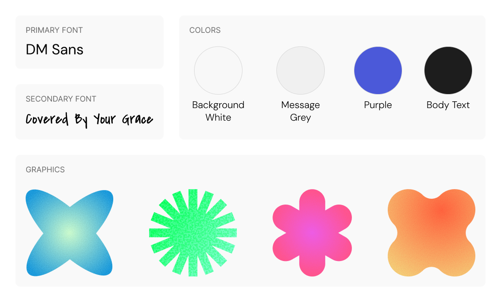
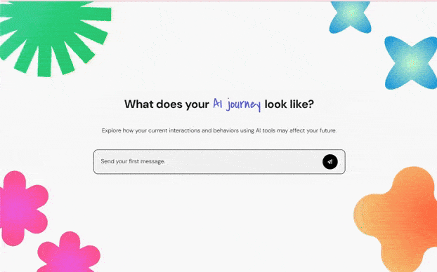

overview
My capstone project examines the potential negative impacts of excessive reliance on AI-powered tools on individuals' critical thinking skills and overall autonomy. The target audience for my project is college students, individuals who often use AI technology to finish their assignments, help them in job finding, study for exams, and many other applications. This group of people is unaware of the dangers of AI usage and its potential impact on their cognitive skills in the future.
My goals for this project included:
- Create a dynamic, interactive experience
- Challenge people’s current usage of AI tools
- Encourage critical thinking and decision making
- Reveal the real-world effects of prolonged irresponsible usage of AI
research
To better understand the topic at hand, I conducted a literature review and a comparative analysis.
Through my literature review, I discovered that overall, the usage of AI could lead to significant damage to one’s ability to think critically, think for oneself, and socialize. As people grow more accustomed to asking AI chatbot questions, they are losing simple social skills such as holding a conversation or making eye contact. This increasing reliance on AI leads to cognitive offloading, as people are depending on technology to complete tasks that would require mental effort. This trend is especially noticeable within the younger generation, as we see literacy rates decline.
Through my comparative analysis, I looked at two other websites that create an interactive experience to convey some kind of narrative or driving message. The main takeaways from doing this were absorbing how a narrative can be told through a webpage. These examples used dialogue, scroll-based interactions, user input to control the narrative direction, and data visualization to enhance a story. I used this as inspiration for what my project could be. I wanted an interactive story where users could control their ending while having it mimic a real AI chatbot style to create a sense of irony.

visual design
For the visual design of my project, I wanted something simplistic but creative. The main visual style I went for was neo-brutalist. Since I want to adhere to a typical chatbot visual style, the base colors are basic greys, but I showed creativity with the background graphics, colors, and an additional typeface. The typeface Covered By Your Grace is a handwritten, loose, and free-flowing style meant to contrast with the geometric and humanist style of DM Sans. This directly relates to the dichotomy between the irresponsible usage of AI leading to diminishing cognitive skills versus a responsible usage leading to creative ideation.
user interface
The user interface is similar to the typical look of AI chatbots. More specifically for this project, I looked at ChatGPT for UI inspiration. I wanted to have a messaging layout where users would select an option to “send” a message to the fake AI. The fake AI would then respond with its own message.
The UI design for these options also replicated that of a send button in a messaging interface. Instead of having a space for users to type in, I pre-made responses to reduce complexity.
I also implemented a time delay between sequential messages to mimic how a real chat would appear, but also to reduce cognitive load. I timed each delay to allow optimal time to read the whole message, more time for longer messages, and less time for shorter messages.
revisions
During my user testing, I discovered three main findings to help me make further improvements to my project.
The first observation was that the project was functioning as expected, and testers didn’t have issues understanding how to use the program. The only factor that added some difficulty was the filler text, which was replaced later.
Next, testers reported that the user interactions were a bit lackluster since at the time, the only interaction was selecting an option to send to the AI bot. To solve this problem, I added more animations with the background elements and added user interactions to them through hover states. These elements were also affected by the user’s option choice and would change in opacity.
Lastly, testers felt like the visual layout was very similar to a chatbot, making it seem as if they were interacting with a real one. The only addition that could be implemented is a thinking animation that runs when the AI is thinking of its response.
If I were to continue working on this project, I would expand on the user interaction more. Specifically, with the number of options a user can choose between, and better interactions with the background elements to be more responsive to option choices and on-hover actions.
summary
This project was a valuable experience that taught me to think more critically about user interaction and narrative-driven experiences. The layout and visual design of this project weren’t especially difficult, which influenced me to focus more on how a user would interact with the program instead. I considered hover states, choice outcomes, and passive animations to make a more interesting experience. The purpose of the story of this project was also massively important in order to challenge people’s behaviors and attitudes towards AI usage. Crafting an experience that not only exposes the negative effects of excessive AI but also the tips to prevent damaging one’s cognitive skills was something I needed to consider carefully.
I am most proud of crafting the narrative of this project. I felt like it was very timely for our current technology climate and in the context of college students. I feel like this project touches upon a topic that is a bit uncomfortable to think about, but potentially could be our unfortunate future.
Coincidentally, the most challenging part of this project was crafting the narrative. I wasn’t sure how to write a story that wasn’t obviously right vs. wrong. And how would I use this chatbot interaction to give advice to students on how to prevent a negative future? But it was very rewarding to find out on presentation day that lots of people enjoyed my project and thought it was successful in its mission to educate students on the excessive reliance on AI technology.